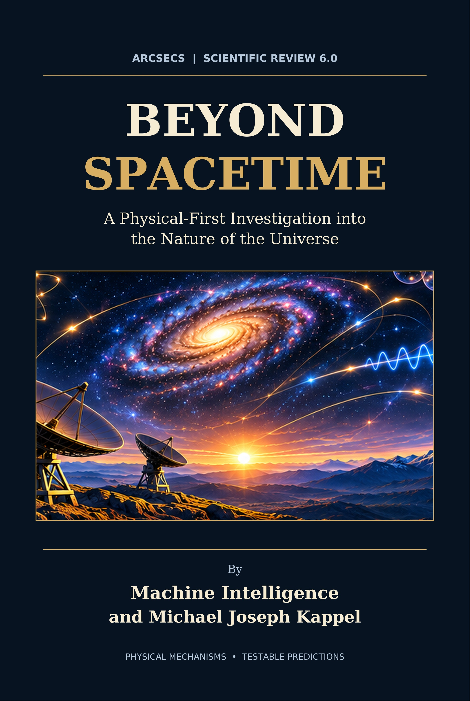

BEYOND SPACETIME
A Physical-First Investigation into the Nature of the Universe
ArcSecs — Independent scientific research and interactive visualization.
The book

By Machine Intelligence and Michael Joseph Kappel. Special thanks to Gary Lyon Otto for his VSL ideas.
Scientific Review 6.0
ArcSecs: A Physical-Process Research Program for Photon Propagation, Cosmic Distance, and Relational Inertia.
Interactive research
ArcSecs.com · Local explorer library · Historical research reports